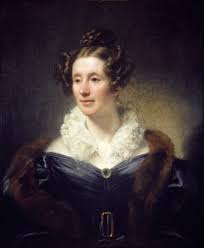
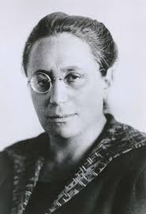
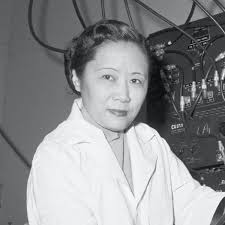
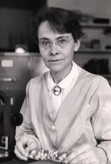
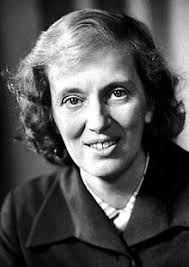
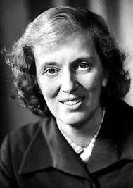

Międzynarodowy Dzień Kobiet i Dziewcząt w Nauce
...obchodzony 11 lutego świętuje odkrycia oraz dokonania kobiet w różnych dziedzinach nauki.
Oto zbiór informacji o niektórych znanych kobietach nauki.
(Należy kliknąć w portret wybranej osoby)




 
